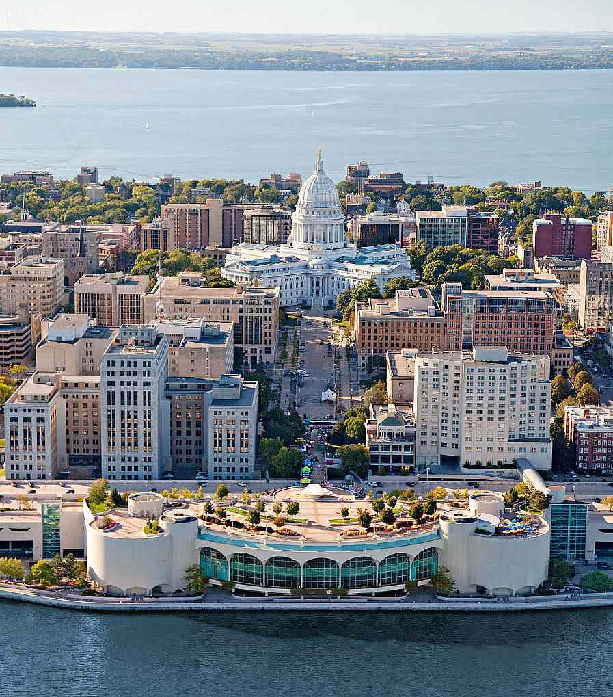

Moving to Madison, WI: Your New Home Awaits
Welcome to Madison, Wisconsin, the vibrant capital city that perfectly balances the charm of the Midwest with the energy of a bustling metropolis. Nestled between the sparkling waters of Lake Mendota and Lake Monona, Madison is known for its stunning natural beauty, rich cultural heritage, and thriving economy. Whether you're moving for career opportunities, higher education, or simply a change of scenery, Madison offers a unique and dynamic environment to call home.
Why Chose Beloit?
Madison is more than just the capital of Wisconsin—it’s a city that offers a high quality of life, a welcoming community, and endless opportunities for personal and professional growth. With a population of around 270,000, Madison provides all the amenities of a big city while maintaining the friendly, approachable atmosphere of a smaller town.
- Thriving Hub. As the state capital, Madison is a center of government and public administration, but its economy is diverse and robust. The city is home to the University of Wisconsin-Madison, a world-class research institution that drives innovation and attracts top talent from around the globe. Madison's economy also benefits from thriving sectors in healthcare, biotechnology, information technology, and manufacturing. Major employers like Epic Systems, American Family Insurance, and the state government offer a wide range of job opportunities, making Madison an excellent place to build a career.
- Education. Madison is renowned for its commitment to education at all levels. The University of Wisconsin-Madison is consistently ranked among the top public universities in the United States, offering a wide array of undergraduate, graduate, and professional programs. The Madison Metropolitan School District serves the city’s K-12 students with a focus on academic excellence, diversity, and inclusivity. For families, Madison offers access to top-tier education in a supportive and nurturing environment.
- Lakes, Parks, and Outdoor Adventures. Madison's unique geography, surrounded by lakes and filled with parks, makes it a haven for outdoor enthusiasts. Whether you enjoy sailing, kayaking, or fishing on the lakes, or prefer hiking, biking, or picnicking in one of the many parks, Madison offers a wealth of recreational opportunities. The city's extensive network of bike paths and trails is one of the best in the nation, encouraging a healthy and active lifestyle for residents of all ages.
Exploring the Neighborhoods
Madison is a city of diverse neighborhoods, each with its own character and charm. From the historic and lively downtown area, where you can find the iconic State Capitol building and a vibrant arts scene, to the quiet, tree-lined streets of neighborhoods like Nakoma and Maple Bluff, there’s a place for everyone in Madison. Whether you’re looking for the energy of city life or the tranquility of suburban living, Madison’s neighborhoods offer something for every taste and lifestyle.
Interested in Moving?
Moving to Madison is a choice that opens doors to endless possibilities. With its thriving economy, top-notch education, and an unparalleled quality of life, Madison is more than just a place to live—it’s a place to grow, explore, and thrive. Whether you’re a young professional, a family looking for a supportive community, or someone seeking new adventures, Madison has everything you need to start your next chapter. We look forward to welcoming you to our vibrant city and helping you find your place in Madison.